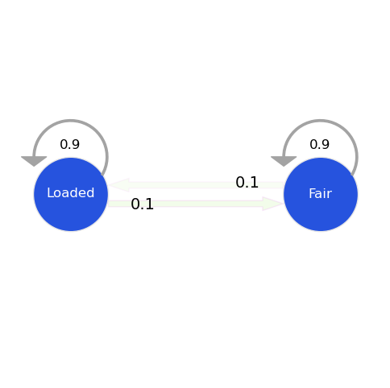
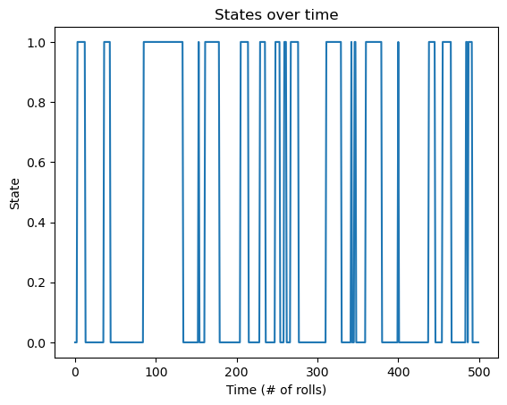
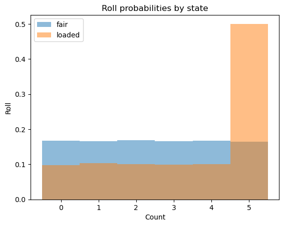
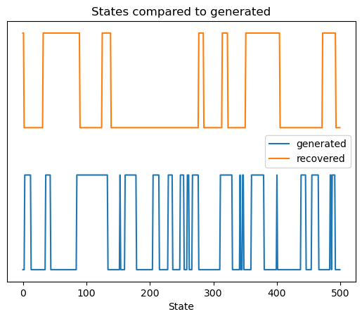
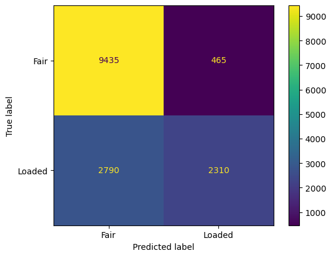
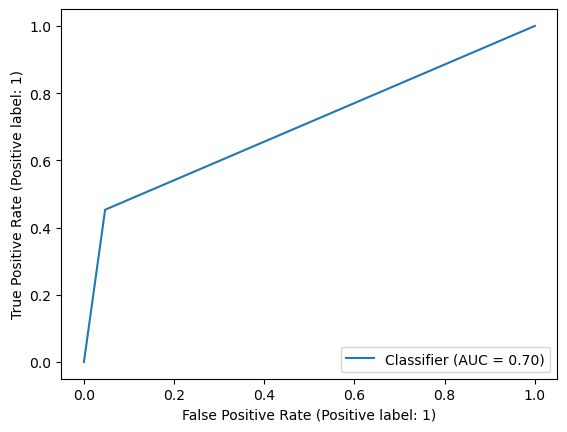

import numpy as np
import pandas as pd
import matplotlib.pyplot as plt
%matplotlib inline
import reCoding Baum-Welch Algorithm from scratch
def forward(states, sequence, a, b, pi, key):
N = len(states)
T = len(sequence)
pi = pi[key] # prob of state i, since 2 states, let's half it be 0.5, 0.5 initially
i = key # holds the first state
# Pseudocount to handle zeros
pseudocount = 1e-100
# for all possible states, and the first actual state (alpha)
# i.e. alpha i for all i has been caluclated given yt
alpha = np.zeros((N, T))
alpha[:,0] = pi * b[:,int(sequence[0])] + pseudocount
# next, we have to do iterations to calculate alpha at different times t
# we need all alpha values since it is going to be summed up to calculate gamma
for t in range(1, T):
for j in range(N):
alpha[j][t] = sum(alpha[i][t-1]*a[i][j]*b[j][int(sequence[t])] for i in range(N)) + pseudocount
return alphadef backward(states, sequence, a, b):
N = len(states)
T = len(sequence)
beta = np.zeros((N, T))
# Pseudocount to handle zeros
pseudocount = 1e-100
# Initialization
beta[:, -1] = 1 # Set the last column to 1
# Recursion
for t in range(T - 2, -1, -1):
for i in range(N):
beta[i, t] = sum(a[i, j] * b[j, int(sequence[t + 1])] * beta[j, t + 1] for j in range(N)) + pseudocount
return betadef train(a, b, pi, sequence, states, key, n_iterations = 100, tol=1e-6):
#Baum-Welch algorithm for HMM
# calculate gamma, xi, and then update a and b parameters
N = len(states)
T = len(sequence)
# M is the number of possible observations i.e. number of columns
M = b.shape[1]
prev_log_likelihood = 0
for iteration in range(n_iterations):
alpha = forward(states, sequence, a, b, pi, key)
beta = backward(states, sequence, a, b)
print(f"Alpha: {alpha}")
print(f"Beta:{beta}")
# Pseudocount to handle zeros
pseudocount = 1e-100
gamma = alpha * beta
# print(gamma)
denominator = np.sum(gamma, axis=0, keepdims=True) # same for all i
gamma = gamma/denominator + pseudocount
print(f"gamma:{gamma}")
xi = np.zeros((N, N, T - 1))
for i in range(N):
for j in range(N):
for t in range(T - 1):
numerator = alpha[i, t] * a[i, j] * b[j, int(sequence[t + 1])] * beta[j, t + 1]
denominator = np.sum(alpha[k, t] * a[k, l] * b[l, int(sequence[t + 1])] * beta[l, t + 1] for k in range(N) for l in range(N))
xi[i, j, t] = (numerator / denominator) + pseudocount
print(f"Xi: {xi}")
# update a and b
# M-step
'''
sequence == k creates a boolean array of the same length as sequence, where each element is True if the corresponding element in sequence is equal to k, and False otherwise.
mask = (sequence == k) assigns this boolean array to the variable mask.
In the context of the Baum-Welch algorithm or similar algorithms for Hidden Markov Models (HMMs), this kind of mask is often used to select specific observations in the computation of probabilities. For example,
it might be used to sum over only the observations that match a particular value, which is relevant when updating the emission matrix b.
'''
# a = (np.sum(xi, axis=2) + pseudocount)/ np.sum(gamma[:, :-1], axis=1, keepdims=True)
for i in range(N): # N is the number of states
for j in range(N): # N is the number of states
numerator = np.sum(xi[i, j, :])
denominator = np.sum(gamma[i, :])
a[i, j] = (numerator+pseudocount) / (denominator+pseudocount)
b = np.zeros((N, M))
# print(gamma.shape)
gamma_sum = np.sum(gamma, axis=1)
obs = []
for i in sequence:
obs.append(int(i))
obs = np.array(obs)
for j in range(N):
for k in range(M):
mask = (obs==k) # for indicative function i.e. 1 if observed = yt, else 0
b[j, k] = (np.sum(gamma[j]*mask)+ pseudocount) / (np.sum(gamma[j]) + pseudocount)
# Normalize rows to ensure each row sums to 1.0
a = a / np.sum(a, axis=1)[:, np.newaxis]
b = b / np.sum(b, axis=1)[:, np.newaxis]
print(f"a = {a}, b = {b}")
# Log Likelihood Calculation
log_likelihood = np.sum(np.log(np.sum(alpha, axis=0)))
# Convergence Check
if np.abs(log_likelihood - prev_log_likelihood) < tol:
print(f"Converged after {iteration + 1} iterations.")
break
prev_log_likelihood = log_likelihood
return a, b, pidef predict(sequence, states, a, b, pi):
# Makes use of the viterbi algorithm to predict best path
# Initialize Variables
T = len(sequence)
N = len(states)
# Pseudocount to handle zeros
pseudocount = 1e-100
viterbi_table = np.zeros((N, T)) # delta
backpointer = np.zeros((N, T)) # psi
# Initialization step, for t = 0
print(int(sequence[0]))
viterbi_table[:, 0] = pi * b[:, int(sequence[0])] + pseudocount
# Calculate Probabilities
for t in range(1, T):
for s in range(N):
max_prob = max(viterbi_table[prev_s][t-1] * a[prev_s][s] for prev_s in range(N)) * b[s][int(sequence[t])]
viterbi_table[s][t] = max_prob + pseudocount
backpointer[s][t] = np.argmax([viterbi_table[prev_s][t-1] * a[prev_s][s]for prev_s in range(N)])
#Traceback and Find Best Path
best_path = []
last_state = np.argmax(viterbi_table[:, -1])
best_path.append(last_state)
best_prob = 1.0
for t in range(T-2, -1, -1):
last_state = last_state = np.argmax(viterbi_table[:, t])
best_prob *= (viterbi_table[last_state, t] + pseudocount)
best_path.append(last_state) # i.e. add to start of list
return best_pathAPPLICATION: DISHONEST CASINO EXAMPLE
import numpy as np
import pandas as pd
import matplotlib.pyplot as plt
from hmmlearn import hmm
gen_model = hmm.CategoricalHMM(n_components=2, n_iter=100, init_params = 'se')
gen_model.startprob_ = np.array([1.0, 0.0])
gen_model.transmat_ = np.array([[0.95, 0.05],
[0.1, 0.9]])
gen_model.emissionprob_ = \
np.array([[1 / 6, 1 / 6, 1 / 6, 1 / 6, 1 / 6, 1 / 6],
[1 / 10, 1 / 10, 1 / 10, 1 / 10, 1 / 10, 1 / 2]])
# simulate the loaded dice rolls
rolls, gen_states = gen_model.sample(30000)import matplotlib.pyplot as plt
# Import the MarkovChain class from markovchain.py
from markovchain import MarkovChain
P = gen_model.transmat_
mc = MarkovChain(P, ['Fair', 'Loaded'])
print("Transition Model:")
mc.draw()
data = {'Fair': gen_model.emissionprob_[0], 'Unfair': gen_model.emissionprob_[1]}
df_emission = pd.DataFrame(data, index=['1', '2', '3', '4', '5', '6'])
print("Emission Matrix:")
df_emission.head()Transition Model:
Emission Matrix:
| Fair | Unfair | |
|---|---|---|
| 1 | 0.166667 | 0.1 |
| 2 | 0.166667 | 0.1 |
| 3 | 0.166667 | 0.1 |
| 4 | 0.166667 | 0.1 |
| 5 | 0.166667 | 0.1 |
pd.DataFrame({'Roll': rolls.flatten()[0:10]+1, 'Coin_State': gen_states.flatten()[0:10]}).head()| Roll | Coin_State | |
|---|---|---|
| 0 | 6 | 0 |
| 1 | 1 | 0 |
| 2 | 2 | 0 |
| 3 | 6 | 1 |
| 4 | 1 | 1 |
# plotting the states of the first 500 coin flips
fig, ax = plt.subplots()
ax.plot(gen_states[:500])
ax.set_title('States over time')
ax.set_xlabel('Time (# of rolls)')
ax.set_ylabel('State')
fig.show()C:\Users\Anu2001\AppData\Local\Temp\ipykernel_10324\3287461216.py:7: UserWarning: Matplotlib is currently using module://matplotlib_inline.backend_inline, which is a non-GUI backend, so cannot show the figure.
fig.show()
# plot rolls for the fair and loaded states
fig, ax = plt.subplots()
ax.hist(rolls[gen_states == 0], label='fair', alpha=0.5,
bins=np.arange(7) - 0.5, density=True)
ax.hist(rolls[gen_states == 1], label='loaded', alpha=0.5,
bins=np.arange(7) - 0.5, density=True)
ax.set_title('Roll probabilities by state')
ax.set_xlabel('Count')
ax.set_ylabel('Roll')
ax.legend()
fig.show()C:\Users\Anu2001\AppData\Local\Temp\ipykernel_10324\2992798780.py:11: UserWarning: Matplotlib is currently using module://matplotlib_inline.backend_inline, which is a non-GUI backend, so cannot show the figure.
fig.show()
# split our data into training and validation sets (50/50 split)
X_train = rolls[:rolls.shape[0] // 2]
X_test = rolls[rolls.shape[0] // 2:]
y_test = np.array(gen_states[gen_states.shape[0] // 2:])
gen_model = gen_model.fit(X_train)
# check base score (non-tuned model)
gen_score = gen_model.score(X_test)
print(f'Generated score: {gen_score}')
# use the Viterbi algorithm to predict the most likely sequence of states
# given the model
# states = best_model.predict(rolls)
states = gen_model.predict(X_test)
# plot our recovered states compared to generated (aim 1)
fig, ax = plt.subplots()
ax.plot(gen_states[:500], label='generated')
ax.plot(states[:500] + 1.5, label='recovered')
ax.set_yticks([])
ax.set_title('States compared to generated')
ax.set_xlabel('Time (# rolls)')
ax.set_xlabel('State')
ax.legend()
fig.show()
# %%
# Let's check our learned transition probabilities and see if they match.
print(f'Transmission Matrix Generated:\n{gen_model.transmat_.round(3)}\n\n')
# %%
# Finally, let's see if we can tell how the die is loaded.
print(f'Emission Matrix Generated:\n{gen_model.emissionprob_.round(3)}\n\n')Even though the 'startprob_' attribute is set, it will be overwritten during initialization because 'init_params' contains 's'
Even though the 'emissionprob_' attribute is set, it will be overwritten during initialization because 'init_params' contains 'e'
C:\Users\Anu2001\AppData\Local\Temp\ipykernel_10324\2874475397.py:47: UserWarning: Matplotlib is currently using module://matplotlib_inline.backend_inline, which is a non-GUI backend, so cannot show the figure.
fig.show()Generated score: -26140.512085616556
Best score: -26136.572745325924
Transmission Matrix Generated:
[[0.949 0.051]
[0.135 0.865]]
Transmission Matrix Recovered:
[[0.903 0.097]
[0.058 0.942]]
Emission Matrix Generated:
[[0.161 0.16 0.171 0.167 0.166 0.173]
[0.095 0.111 0.085 0.083 0.093 0.533]]
Emission Matrix Recovered:
[[0.106 0.118 0.103 0.1 0.107 0.467]
[0.165 0.164 0.175 0.171 0.17 0.155]]

from sklearn.metrics import confusion_matrix, classification_report, ConfusionMatrixDisplay
from sklearn.metrics import RocCurveDisplay
# True states (hidden states)
true_states = y_test
predicted_states = states
# Evaluate confusion matrix
conf_matrix = confusion_matrix(true_states, predicted_states)
# Display confusion matrix
print("Confusion Matrix:")
disp = ConfusionMatrixDisplay(confusion_matrix=conf_matrix, display_labels=['Fair', 'Loaded'])
disp.plot()
plt.show()
# Evaluate classification report
class_report = classification_report(true_states, predicted_states)
# Display classification report
print("Classification Report:")
print(class_report)
RocCurveDisplay.from_predictions(true_states, predicted_states)Confusion Matrix:
Classification Report:
precision recall f1-score support
0 0.77 0.95 0.85 9900
1 0.83 0.45 0.59 5100
accuracy 0.78 15000
macro avg 0.80 0.70 0.72 15000
weighted avg 0.79 0.78 0.76 15000

<sklearn.metrics._plot.roc_curve.RocCurveDisplay at 0x1404967d030>